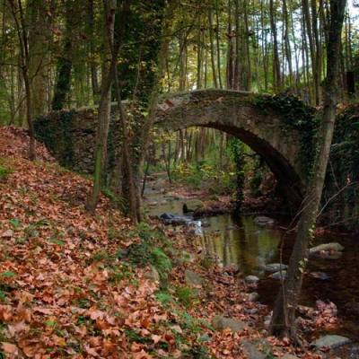

Visita · Gualba
Aquest pont de pedra d'un sol ull travessa la riera de Gualba just davant del Molí d'en Figueres. Té les dovelles fetes de carreus i una barana de pedra amb passamà. El Mapa de Patrimoni Cultural…